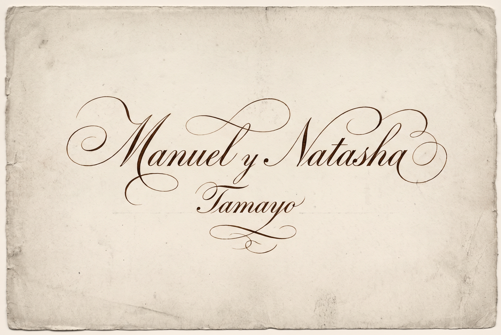
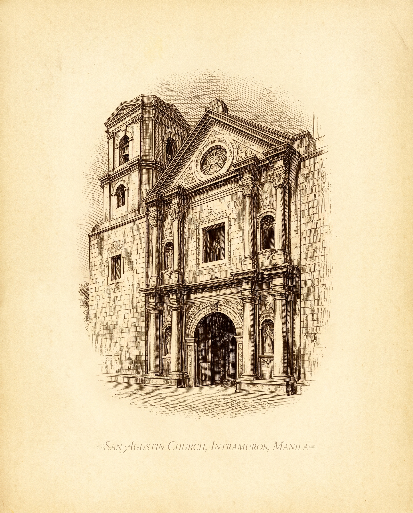
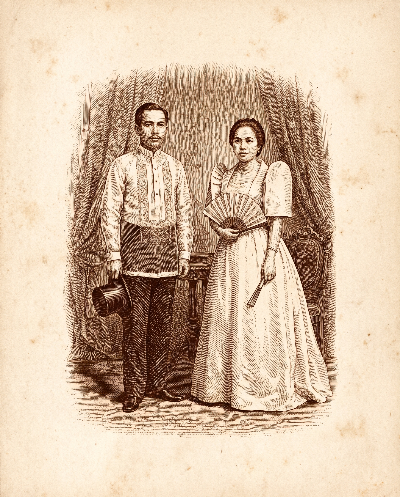
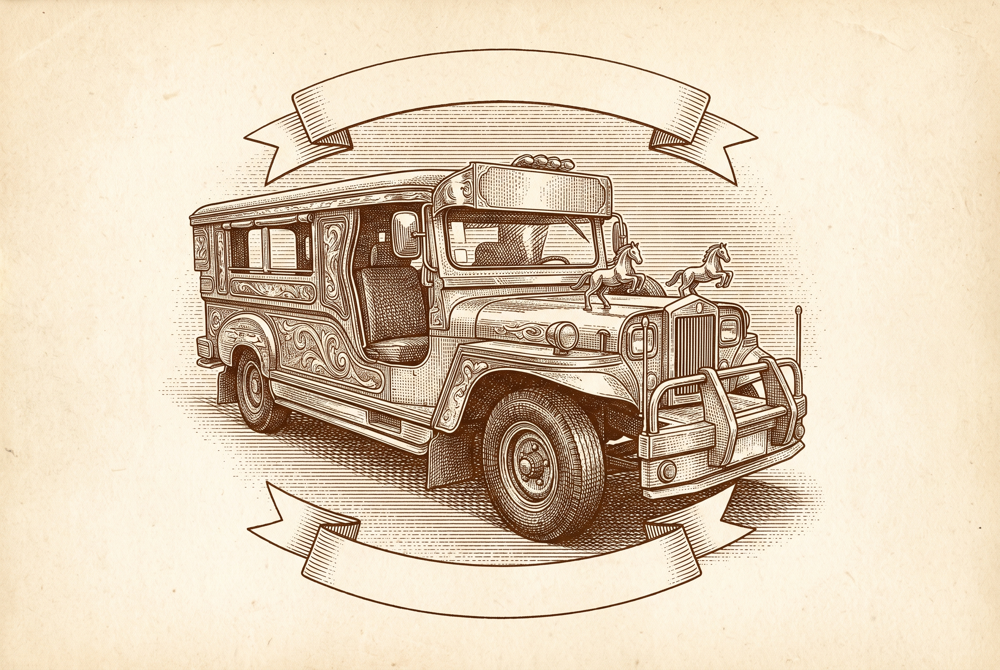
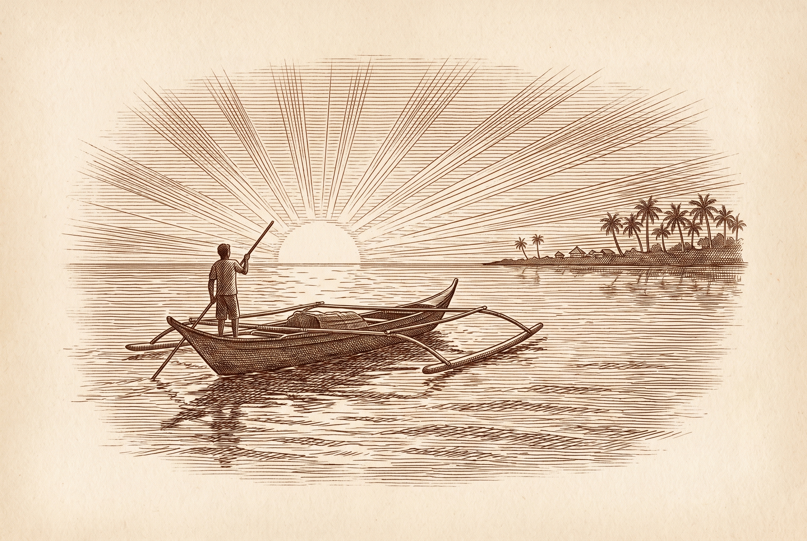

La Boda · Sabado · Diez de Abril

SAN AGUSTIN CHURCH · INTRAMUROS · MANILA
Saturday 10 April 2027 · Four in the afternoon

Nuestra Historia
Our Story
Photography placeholders sit inside arched frames, echoing the doors of San Agustin and the arcades of the old walled city. Prenup images drop straight into these shapes when they arrive.
Prenup 01
Prenup 02
Prenup 03

La Ceremonia
The Ceremony

San Agustin Church
General Luna Street, Intramuros, Manila
Please be seated by half past three
The stones of the old city are uneven, wear footwear you can walk in
Please be seated by half past three
The stones of the old city are uneven, wear footwear you can walk in
Las Láminas
The plates, one for every page

Nuestra Historia
A harana beneath the capiz window

Dress Code
Barong Tagalog and terno, the fashion plate

Reception
The Diamond Hotel on Manila Bay, the Constellation Room

Transport
The jeepney, heir of the kalesa
Travel
Perth to Manila, drawn as it might have been

Things to Do
Manila Bay at sunset
Los Mapas
Every road leads to Manila
An antique route chart for the Travel page, dotted lines converging on Manila from Perth, from America, from Singapore.

El Vestuario
The dress code, plate by plate
Para los Caballeros
Barong Tagalog in pina or jusi, untucked by design, dark trousers, no jacket, no tie

Para las Damas
Modern Filipiniana or Filipiniana themed, both welcome. Easy ready to wear options: a butterfly sleeve dress, a simple terno gown, an embroidered kimona with a plain skirt, or any modern piece that nods to Filipiniana, a butterfly sleeve, an embroidered panel, an ecru or earth tone palette. Purchasable off the rack, order six or more weeks ahead. Formal warm neutrals remain a graceful out.
Palette
Ecru
#F5EDDD
Wine
#6B1E36
Burnt orange
#C1552C
Gold
#C9A227
Ink
#2B2B2B
Wine is display only, script and monogram, never body text. Gold stays linework, borders and motifs. Burnt orange carries labels and small accents. Ink does the reading.
Type package
Manuel y Natasha
Pinyon Script · names and section scripts only
THE WALLED CITY
Cinzel · headings, labels, inscriptions
In the old city, on the tenth of April
IM Fell English Italic · antique subtitles
Body copy set in Alegreya, an old style serif with calligraphic bones, warm and readable on a phone at arm's length, which is how most guests will meet this site.
Alegreya · body copy
Noto Sans Tagalog · baybayin accents, always with a translation